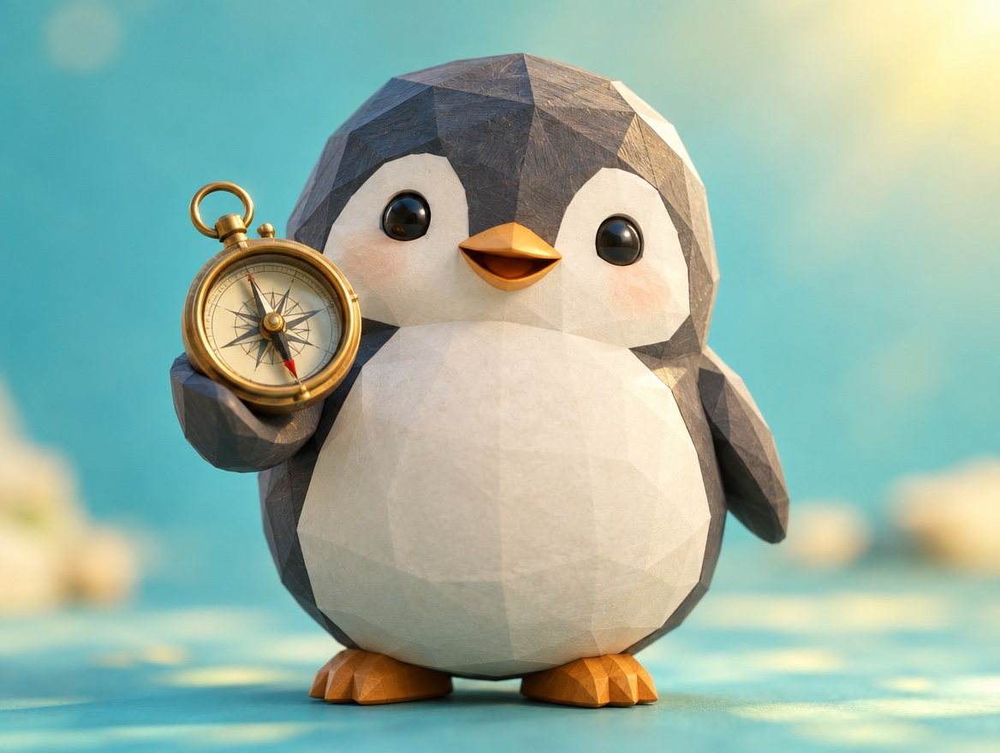

🧪 LAB · 試作 — AIが読書メモから一気に作った記事です。本番の一覧には出していません · 試作の一覧
🐧 EVERYDAY LIFE⚡ 15 SEC
Many people want to help, and they are waiting to be asked 🗺️

Not A Bother
We often think asking people for help is a bother, but maybe it is the opposite.
Waiting To Help
It seems many people want to be useful and are waiting to be asked.
⚡ TRY IT
Ask the way
🗺️ "Excuse me, where is the station?"
…
🎒 "Oh! Go straight, then turn left. 👉"
🧣 "The station? I will walk with you!"
☂️ "This way! Do you want my map, too?"
🎧 "Sure! It is 5 minutes from here."
🧢 "Ask me anything! I love this town."
✨ Happy helpers: 0/5
💗 Thank-yous: 0
Tap a penguin to ask the way.
Everyone looks happy! Ask someone else, too. Tap again to say thank you.
🎉 All 5 were happy to help! They were waiting to be asked.
Easy Practice
For practice, asking someone the way is easy.
Happy To Help
The person you ask usually tells you happily.
📚 I learned this from the Japanese blog "Panda no Ondo".